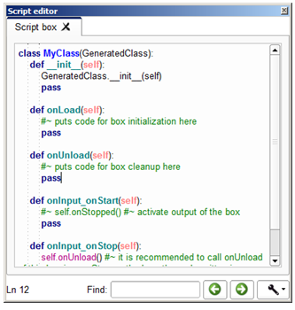
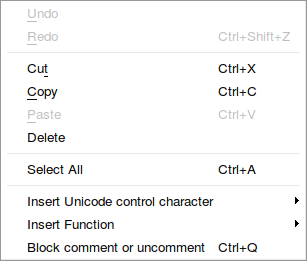

The Script Editor panel enables to edit box scripts.
This editor integrates syntax highlighting to ease the edition.
At the bottom of the panel you can see the number of the selected line on the left and a field to search a specific keyword in the script.
In the flow diagram, to open the script of any box, right-click on it and select Edit box script.
The script is displayed in the Script editor panel.
Note
For a script box you can also double-click on it.
If you right-click in the panel, the following menu is displayed:
This context menu provides fast access to some classic functions for a script editor:
It also enables you to make some other advanced actions:
Insert Unicode control character: to insert various characters. This menu is not always available depending on the OS. But anyway:
Warning
It is strongly advised to not use this menu as it inserts characters that are not visible in the script editor and that may lead to errors during the execution of the behavior.
Insert Function: to insert a built-in function only available from a box script.
You have useful functions at the bottom of the panel:
Search text field to find a specific keyword in the current script:
It is highlighted in red if the keyword is not found in the script:
Warning
The searching function does not permit to loop. The search text field will highlight in red if string specified isn’t found after the current location of the editing cursor. In this case, keep in mind you can use the button to search before the location of the cursor.
Navigation buttons to move to the previous or the next matching string:
Setting button to specify Match case and/or Match whole word search options.
Note
You can change the font of the Script editor panel for a monospaced one in the Choregraphe’s preferences.